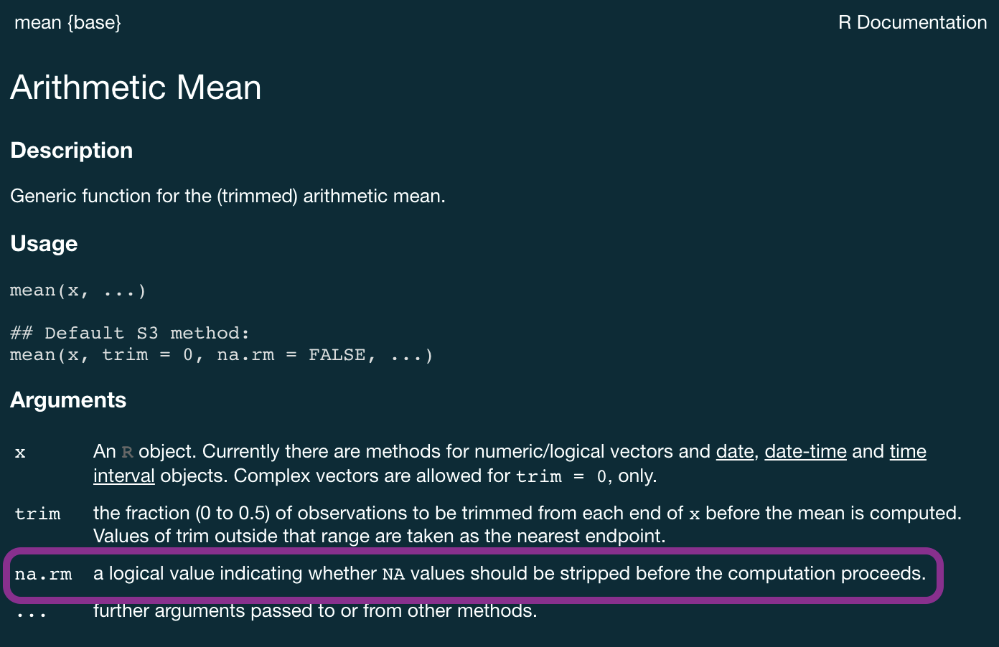
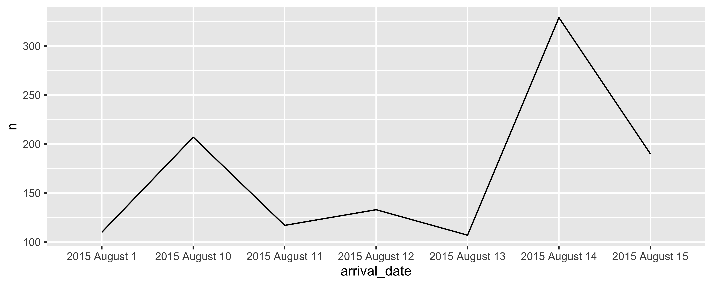
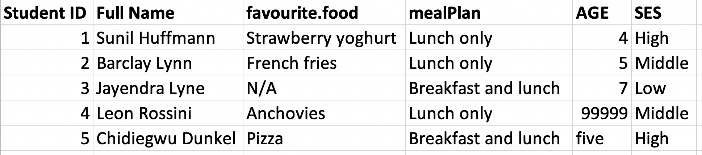
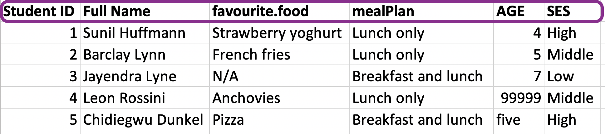
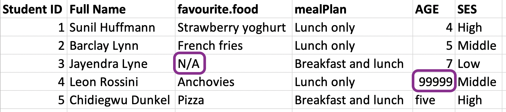
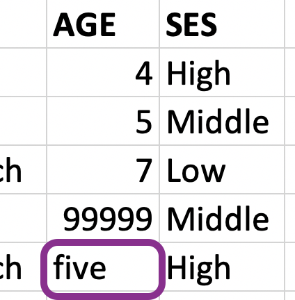

STAT 7500
A survey asked respondents their name and number of cats. The instructions said to enter the number of cats as a numerical value.
# A tibble: 60 × 3
name number_of_cats handedness
<chr> <chr> <chr>
1 Bernice Warren 0 left
2 Woodrow Stone 0 left
3 Willie Bass 1 left
4 Tyrone Estrada 3 left
5 Alex Daniels 3 left
6 Jane Bates 2 left
# ℹ 54 more rowsmean() expect?
Warning: There was 1 warning in `summarise()`.
ℹ In argument: `mean_cats = mean(number_of_cats, na.rm = TRUE)`.
Caused by warning in `mean.default()`:
! argument is not numeric or logical: returning NA# A tibble: 1 × 1
mean_cats
<dbl>
1 NAWhat is the type of the number_of_cats variable?
Which entries might explain why the whole column was read as character?
3 minutes · Practice 1 in the companion document
Use the original cat_lovers data.
Explain why na.rm = TRUE does not solve the problem.
distinct() can help# A tibble: 7 × 1
number_of_cats
<chr>
1 0
2 1
3 3
4 2
5 4
6 1.5 - honestly I think one of my cats is half human
7 three Inspect the original responses before deciding what to replace.
The numeric replacements and the existing character values are incompatible.
All results in case_when() must have compatible types.
cat_lovers |>
mutate(number_of_cats = case_when(
name == "Ginger Clark" ~ "2", #if name is Ginger Clark, assign value 2
name == "Doug Bass" ~ "3", #if names is Doug Bass, assign value 3
TRUE ~ number_of_cats #else, keep original value
),
number_of_cats = as.numeric(number_of_cats)
) |>
summarise(mean_cats = mean(number_of_cats))# A tibble: 1 × 1
mean_cats
<dbl>
1 0.833# A tibble: 1 × 1
mean_cats
<dbl>
1 0.833na.rm = TRUE removes missing values; it does not fix a character column.
# A tibble: 0 × 3
# ℹ 3 variables: name <chr>, number_of_cats <dbl>,
# handedness <chr>Are there any missing values? Were they already missing, or did the conversion create them?
If needed, return to the original data to inspect those responses.
You have seen these labels in glimpse(). They describe how values are stored.
| Type | Example | Common use |
|---|---|---|
| Logical | TRUE, FALSE |
Conditions and indicators |
| Double | 1.335, 7 |
Numerical measurements |
| Integer | 7L |
Integer values |
| Character | "hello", "7" |
Text |
The type affects which operations make sense: "7" is not the number 7.
with intention…
with intention…
without intention…
R will happily convert between various types without complaint when different types of data are concatenated in a vector, and that’s not always a great thing!
Let’s give formal names to what we’ve seen so far:
as.logical(), as.numeric(), as.integer(), as.double(), or as.character()NA: Not availableNaN: Not a numberInf: Positive infinity-Inf: Negative infinityA type describes the underlying storage; a class helps determine how R treats an object.
We will focus on what this means for cleaning and plotting.
R uses factors to handle categorical variables, variables that have a fixed and known set of possible values
Factors store integer codes together with category labels called levels.
The codes are positions in the level list, not measurements.
Changing the level order can change the order of categories in a plot.
A Date object stores the number of days since 1 January 1970, together with its date class.
The class lets R display calendar dates and place them in chronological order.
We can think of data frames like vectors of equal length glued together
Lists are a generic vector container; vectors of any type can go in them
pull() function, we extract a vector from the data frame# A tibble: 3 × 2
handedness n
<chr> <int>
1 ambidextrous 5
2 left 13
3 right 42A column can be stored as character even when its values represent categories.
What order would be useful for displaying these categories?
Character categories are displayed alphabetically by default.
fct_infreq(): order categories by their frequency.fct_relevel(): specify an order based on meaning.fct_rev(): reverse the current order.forcats provides tools for working with factors and is part of the tidyverse.
Reordering rows with arrange() does not change a factor’s level order.
Practice 2 in the companion document
Make a horizontal bar chart of handedness with the most common category at the top.
fct_infreq() and, if needed, fct_rev().What changed about the data’s presentation? What stayed the same?
lubridate provides tools for parsing and working with dates.
[1] "2020-01-31"[1] "2020-01-31"[1] "2020-01-31"The function name describes the order of the input components.
What would you need to know before parsing "01/02/2020"?
hotels dataEach row represents a hotel booking.
Rows: 119,390
Columns: 5
$ hotel <chr> "Resort Hotel", "Resort Hotel…
$ arrival_date_year <dbl> 2015, 2015, 2015, 2015, 2015,…
$ arrival_date_month <chr> "July", "July", "July", "July…
$ arrival_date_week_number <dbl> 27, 27, 27, 27, 27, 27, 27, 2…
$ arrival_date_day_of_month <dbl> 1, 1, 1, 1, 1, 1, 1, 1, 1, 1,…Calculate and visualise the number of bookings on any given arrival date.
# A tibble: 119,390 × 4
arrival_date_year arrival_date_month arrival_date_week_number
<dbl> <chr> <dbl>
1 2015 July 27
2 2015 July 27
3 2015 July 27
4 2015 July 27
5 2015 July 27
6 2015 July 27
# ℹ 119,384 more rows
# ℹ 1 more variable: arrival_date_day_of_month <dbl># A tibble: 119,390 × 30
arrival_date hotel is_canceled lead_time arrival_date_week_nu…¹
<chr> <chr> <dbl> <dbl> <dbl>
1 2015 July 1 Reso… 0 342 27
2 2015 July 1 Reso… 0 737 27
3 2015 July 1 Reso… 0 7 27
4 2015 July 1 Reso… 0 13 27
5 2015 July 1 Reso… 0 14 27
6 2015 July 1 Reso… 0 14 27
# ℹ 119,384 more rows
# ℹ abbreviated name: ¹arrival_date_week_number
# ℹ 25 more variables: stays_in_weekend_nights <dbl>,
# stays_in_week_nights <dbl>, adults <dbl>, children <dbl>,
# babies <dbl>, meal <chr>, country <chr>,
# market_segment <chr>, distribution_channel <chr>,
# is_repeated_guest <dbl>, previous_cancellations <dbl>, …# A tibble: 793 × 2
arrival_date n
<chr> <int>
1 2015 August 1 110
2 2015 August 10 207
3 2015 August 11 117
4 2015 August 12 133
5 2015 August 13 107
6 2015 August 14 329
# ℹ 787 more rowsZooming in a bit…
Why does the plot start with August when we know our data start in July? And why does 10 August come after 1 August?

The hotel pipeline runs, but its plot has an ordering problem.
Predict first: Will converting dates change the counts, the order, or both?
# A tibble: 119,390 × 30
arrival_date hotel is_canceled lead_time arrival_date_week_nu…¹
<date> <chr> <dbl> <dbl> <dbl>
1 2015-07-01 Reso… 0 342 27
2 2015-07-01 Reso… 0 737 27
3 2015-07-01 Reso… 0 7 27
4 2015-07-01 Reso… 0 13 27
5 2015-07-01 Reso… 0 14 27
6 2015-07-01 Reso… 0 14 27
# ℹ 119,384 more rows
# ℹ abbreviated name: ¹arrival_date_week_number
# ℹ 25 more variables: stays_in_weekend_nights <dbl>,
# stays_in_week_nights <dbl>, adults <dbl>, children <dbl>,
# babies <dbl>, meal <chr>, country <chr>,
# market_segment <chr>, distribution_channel <chr>,
# is_repeated_guest <dbl>, previous_cancellations <dbl>, …# A tibble: 793 × 2
arrival_date n
<date> <int>
1 2015-07-01 122
2 2015-07-02 93
3 2015-07-03 56
4 2015-07-04 88
5 2015-07-05 53
6 2015-07-06 75
# ℹ 787 more rowsSome variables include a time of day as well as a date.
_hms adds hours, minutes, and seconds to the parser.The same principle applies: match the parser to the input format.
[1] "ID" "Price"
[3] "neighbourhood" "accommodates"
[5] "Number of bathrooms" "Number of Bedrooms"
[7] "n beds" "Review Scores Rating"
[9] "Number of reviews" "listing_url" R permits spaces in names, but you need backticks to refer to them:
[1] "id" "price"
[3] "neighbourhood" "accommodates"
[5] "bathroom" "bedroom"
[7] "bed" "review_scores_rating"
[9] "n_reviews" "url" skip = 1 skips the existing header. Names must match the columns’ number and order.
In Week 2, we used na = ... to identify documented missing-value codes in df-na.csv.
We can also state the types we expect:
If a value cannot be parsed as the requested type, it can become NA with a parsing warning.
# A tibble: 0 × 5
# ℹ 5 variables: row <int>, col <int>, expected <chr>,
# actual <chr>, file <chr>Forcing a numeric type would not explain what a response like "two or three" means.
| Function | Expected values |
|---|---|
col_character() |
Text, including IDs with leading zeros |
col_double() |
Numbers |
col_integer() |
Integer values |
col_logical() |
Logical values |
col_date() |
Dates |
col_datetime() |
Dates and times |
col_skip() |
Do not import this column |
Choose types based on what a variable represents, not just how its values look.

# A tibble: 5 × 6
`Student ID` `Full Name` favourite.food mealPlan AGE SES
<dbl> <chr> <chr> <chr> <chr> <chr>
1 1 Sunil Huffmann Strawberry yo… Lunch o… 4 High
2 2 Barclay Lynn French fries Lunch o… 5 Midd…
3 3 Jayendra Lyne N/A Breakfa… 7 Low
4 4 Leon Rossini Anchovies Lunch o… 99999 Midd…
5 5 Chidiegwu Dun… Pizza Breakfa… five High 
# A tibble: 5 × 6
student_id full_name favourite_food meal_plan age ses
<dbl> <chr> <chr> <chr> <chr> <chr>
1 1 Sunil Huffmann Strawberry yo… Lunch on… 4 High
2 2 Barclay Lynn French fries Lunch on… 5 Midd…
3 3 Jayendra Lyne N/A Breakfas… 7 Low
4 4 Leon Rossini Anchovies Lunch on… 99999 Midd…
5 5 Chidiegwu Dunk… Pizza Breakfas… five High 
# A tibble: 5 × 6
student_id full_name favourite_food meal_plan age ses
<dbl> <chr> <chr> <chr> <chr> <chr>
1 1 Sunil Huffmann Strawberry yo… Lunch on… 4 High
2 2 Barclay Lynn French fries Lunch on… 5 Midd…
3 3 Jayendra Lyne <NA> Breakfas… 7 Low
4 4 Leon Rossini Anchovies Lunch on… <NA> Midd…
5 5 Chidiegwu Dunk… Pizza Breakfas… five High Here, N/A and 99999 are documented missing-value codes.
age numericRows: 5
Columns: 6
$ student_id <dbl> 1, 2, 3, 4, 5
$ full_name <chr> "Sunil Huffmann", "Barclay Lynn", "Jayen…
$ favourite_food <chr> "Strawberry yoghurt", "French fries", NA…
$ meal_plan <chr> "Lunch only", "Lunch only", "Breakfast a…
$ age <dbl> 4, 5, 7, NA, 5
$ ses <chr> "High", "Middle", "Low", "Middle", "High"
What order are the levels of ses listed in?
ses factorThe order is based on meaning, not alphabetical order or frequency.
# A tibble: 5 × 6
student_id full_name favourite_food meal_plan age ses
<dbl> <chr> <chr> <chr> <dbl> <fct>
1 1 Sunil Huffmann Strawberry yo… Lunch on… 4 High
2 2 Barclay Lynn French fries Lunch on… 5 Midd…
3 3 Jayendra Lyne <NA> Breakfas… 7 Low
4 4 Leon Rossini Anchovies Lunch on… NA Midd…
5 5 Chidiegwu Dunk… Pizza Breakfas… 5 High What happened to ses again?
read_rds() and write_rds()CSV stores a rectangular table as text; it does not preserve factor levels or their order.
RDS preserves an R object, including its classes and factor levels.
Use CSV for exchange with other tools; use RDS when you need to retain an R object’s structure.
Before moving on, ask:
A pipeline that runs is not necessarily a pipeline that preserves the meaning of the data.